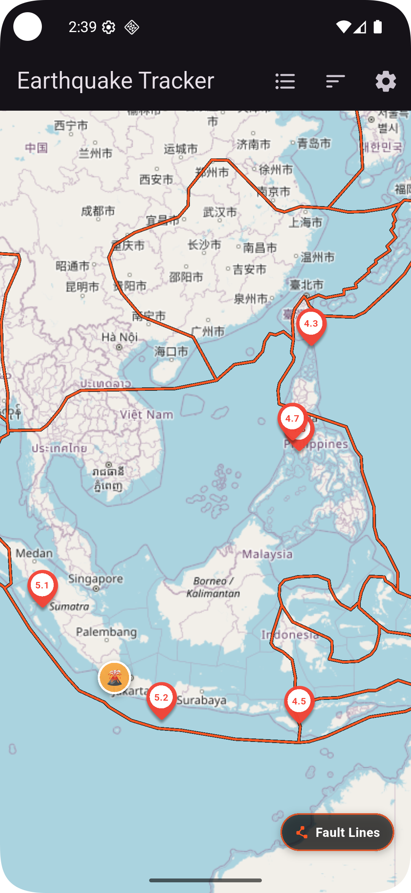

Key Features
🌍 Real-Time Data
Direct integration with the USGS global API to fetch recent seismic events accurate to the minute.
📍 Proximity Radius
Filter magnitude thresholds and seismic activity within a custom radius from your current location.
🔔 Instant Alerts
High-priority notifications and safety alarms triggered when high-magnitude quakes are detected nearby (planned for a future update).
🗺️ Live Seismic Radar
Switch seamlessly between list view and an interactive radar map with locked rotation, magnitude pins, and instant epicenter details.
What's New
Version 1.0.5


- Tectonic Plate Boundaries & Fault Lines: Trace Earth's major fault lines directly on the interactive map with a dedicated switch button to toggle them on or off anytime[cite: 1, 2].
- Seismic Education & Insights: Explore dynamic tectonic plate mechanics and understand where over 80% of global earthquakes strike along converging and shifting plates[cite: 2].
- Hazards & Haptic Feedback: Includes active volcano overlays, nuclear power plant markers, and magnitude-scaled vibration feedback.

🗺️ Fault Lines Map Overlay
ℹ️ Tectonic Plates Guide
🌋 Volcano Overlays
☢️ Nuclear Power Plants